Cartel de la barra carta, 216 × 279 mm
Para la barra o la pared, a la altura de los ojos. Se lee de lejos: «Escanea y pide», el QR de 66 mm (se lee a unos 60 cm) y tres pasos. La franja de colores al pie, como en los botones.
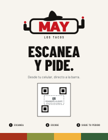
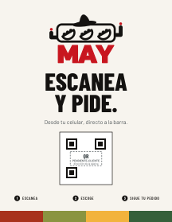
Calcomanía de cierre redonda, 60 mm
Cierra el doblez de la bolsa. «Cerrado en la barra»: el cliente sabe que nadie la abrió en el camino. A color sobre etiqueta crema, o a una tinta directo sobre cartón (más barata).
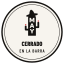
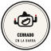
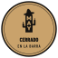
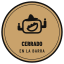
Volante para la bolsa un cuarto de carta, 108 × 140 mm
Va dentro de cada bolsa: invita a pedir la próxima vez desde el celular. Cuatro salen de una hoja carta.
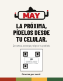
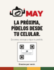
Página de pedidos
Nombre: Los Tacos May — Pedidos. Nombre corto (bajo el ícono en el celular, máximo 12 letras): Tacos May. Los archivos están en /marca/materiales/pedidos/, con el logotipo en uso; cómo se enlazan, en el README.
En la pestaña del navegador
En la pantalla de inicio del celular
Izquierda, iPhone (cuadrado, él redondea); derecha, Android (lo recorta en círculo: el logotipo va dentro de la zona segura).
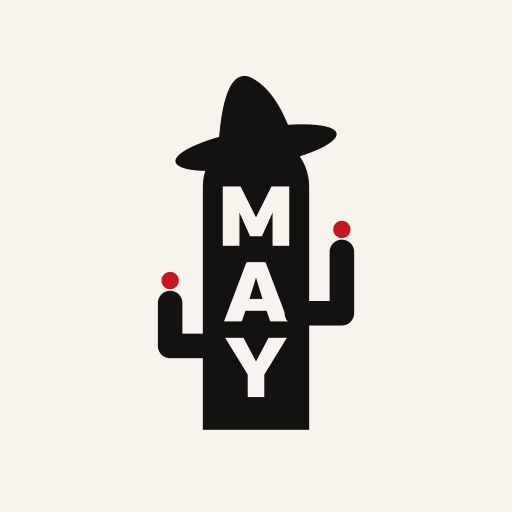
Tacos May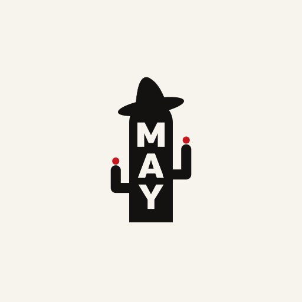
Tacos May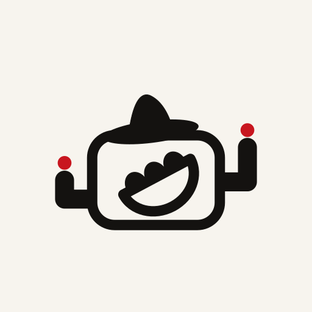
Tacos May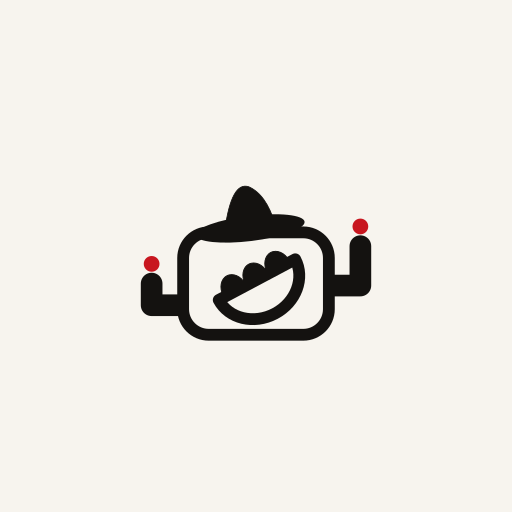
Tacos MayImagen para compartir 1200 × 630
La que sale al mandar el enlace por WhatsApp o redes. Las tres charolas son los guisos que más salen (02, 08 y 09), cada una con su número y su nombre, sin fotos generadas.
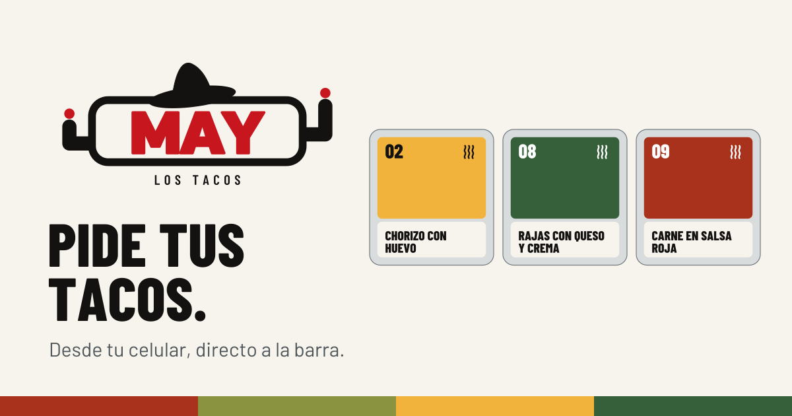
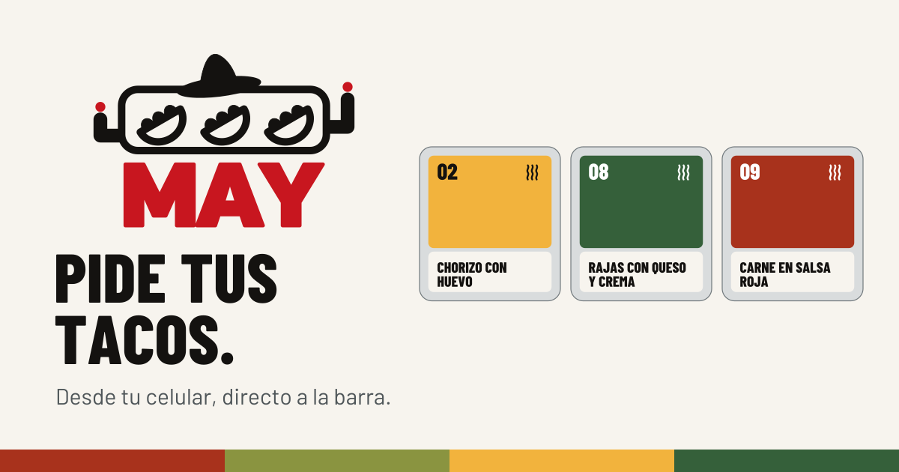
Empaque propuesta: la familia aún no ha dicho qué usan
Una bolsa de papel en cartón natural impresa a una tinta (o con un sello de goma: misma pieza, sin imprenta), la calcomanía en el doblez y la etiqueta del pedido impresa en la barra por la impresora térmica (80 mm, en negro). Lo único que cambia a domicilio es la etiqueta, con dirección, y la calcomanía a color, que se nota más si llega rota. Medida de la bolsa: PENDIENTE-CLIENTE.
Para llevar
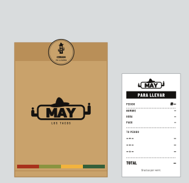
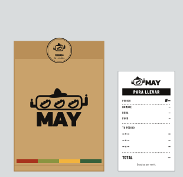
A domicilio
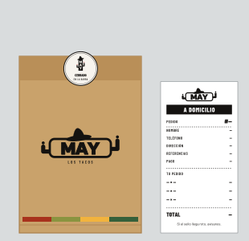
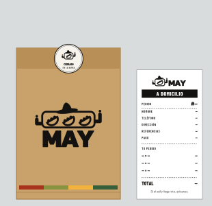
La etiqueta del pedido ticket térmico, 80 mm
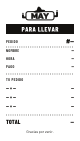
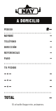
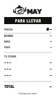
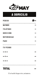